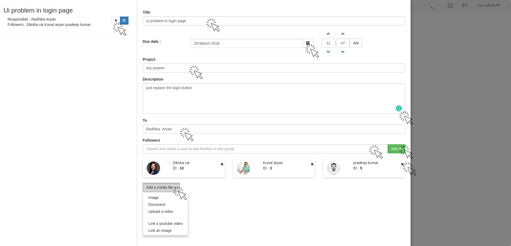
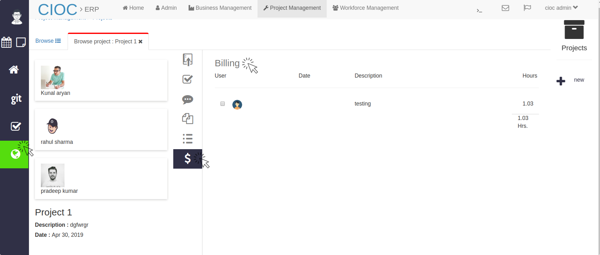

Project Management¶

Project Management
In the above tab you see the overview graph of project management system.
- Click on Git and you will see below tab.
Git¶
Git
Here in the above tab you will see the Latest Activity (similar to GitHub).
- Click on Refresh button to refresh the latest activity tab.
- Click on Next and Previous button to browse the activities.
- Click on Groups to create and manage groups.
Groups¶
Group
In the above tab you will see the groups.
- Search and select group in Search bar by their id.
- Click on Refresh button to refresh the groups tab.
- To delete the group click on their Delete icon and group will be deleted.
- and to edit them click on their Pencil icon button then you will see the below tab.
Edit group
Here change the group’s details according to your requirements and click on Save button, that group’s details will be updated.
- To create a new group click on New+ button (From groups tab) then you will see a tab similar to edit tab.
- Fill the Name of group, their Description and search and select Users for that group and click on add+ button to add them.
- and group will be created and it will be shown in groups tab. in case it is not showing click on Refresh button.
- Click on repository then you will see below tab.
Repos¶
Repositories
In above tab you are seeing repositories.
- Search and select repos in Search bar by their id.
- Click on Refresh button to refresh the groups tab.
- To delete the repos click on their Delete icon and group will be deleted.
- To see that repository details click on that repos’s I icon button. their you will see their files too.
- and to edit them click on their Pencil icon button then you will see the below tab.
Edit Repository
Here change the repos’s details according to your requirements and click on Save button, that repos’s details will be updated.
- To create a new repos click on New+ button (From repos tab) then you will see a tab similar to edit repository tab.
- Fill the Name of repos, their Description and search and select Projects for that repos
- and set the New Permission for particular user or group(from drop down).
- by clicking on checkbox of Read, write, Delete and limited.
- and search and select Users for that group and click on add+ button to add them.
- and to edit them click on their Pencil icon button then you will see the below tab.
Here you can edit the permissions and click on Save icon button to save the repos’s permission, and if you want to delete some user or group permission click on Delete icon button. and finally click on save button to save the changes.
- From the Manage tab you can created and delete the permissions option whatever you had used in repos’s permission.
- Click on Task Board to manage your tasks.
Task Board¶
Task Board
In the above tab you are seeing tasks, different color of tabs showing the status of that task for e.g. if task is 100% complete is will green, for 50% blue, for 25% yellow and for 0% it will show in red color.
- You can Search the task in search bar by their title(to check or edit their status).
- You can short the task list by using the several buttons like Ascending/Descending, Order By: Created/Completed.
- You can include who can see this task status by clicking in Include Where I am by selecting the checkbox for Followers(admin), Assignee(manager) and Responsible(employee).
- You can add task by clicking on +Add button then you will see below tab.
Creating Task
In above tab
- Fill the Title of task(issues) set their Due Date and Time.
- Search and select from which project it belongs.
- Write the Description for that task which will help user to resolve it.
- Fill the name of person who will solve it in To text area.
- search and select Followers for that task and click on add+ button to add them.
Adding Sub-task
Click on Add a media file drop down button to attach the related file of that issue.
- The created task will be shown in right hand side of Task board.
- You can add Sub task too by clicking on + button (in the left upper corner) and
- sub task will be shown below that(as in above image). after seeing this task responsible can change the status of that task according to their performance like In Progress, Stuck and Complete.
- By clicking on their Pencil button you can edit the sub task, their responsible and followers too.
- To write a comment click on Chat icon you will see all your comment here and below that there is a text field (Add a comment) write your comment in this and click on Send button and written comment will be added in the comment section of that task.
- Click on File icon to see the related files and click on Upload icon to upload some related files or reference.
Click on Projects to manage them.
Projects¶
Projects
Here you are seeing projects.
- Search and select project in Search bar by their title.
- Click on Refresh button to refresh the projects tab.
- To delete the projects click on their Delete icon and that project will be deleted.
- and to edit them click on their Pencil icon button then you will see the below tab.
- If you want to create a new project click on + new then you will see below format.
Creating Project
Here first of all
- Write the Title of project which you want to create.
- after that search and select the Company.
- Set the Due date and Cost Center .
- Write the Description of the project and Add a media file (as per requirement).
- search and select Users for that project’s Team and click on Add+ button to add them in project.
- Click on Save button and project will be created, click on reset to reset the project creation and if you want to go back click on Back button.
To see that project details click on that project’s I icon button. their you will see details like below.
Project Details (commits)
In above tab you can see the project’s details like Project Name (Project1), Description (dgfwrgr), Due Date (Apr 30, 2019) and team members.
- In Commits you can see the commit details.
- Click on Task and you will see the below tab.
Project’s Task
Here
- You can see project related Tasks and their status too.
- Click on that task to edit or resolve them.
- Click on +Add button to add the task then you will see the same tab as you had seen while creating project(follow it).
- Below task there is Chat icon click on it. then you will see the below tab.
Comments
Here you can see all the comments (in Timeline) people have done here to write a comment click on Chat icon you will see all your comment here and below that there is a text field (Add a comment) write your comment in this and click on Send button and written comment will be added in the comment section (Timeline).
- Click on Files icon to see the files of project. it will show in below format
Project’s Files
Here you will see file Name, Up-loader and When it was uploaded.
- Click on +Edit button to edit the file (simply replace the file with relate new one as you were uploaded).
- Click on Issues icon and you will see their details in below format.
Project’s Issues
Here you can see the issues and their details.
- Click on that issue’s I icon button whose details you want to check and you will see that issues details in below format.
Project Issue’s Details
Click on $ (Billing) icon button to see the billing details in below format.
Project’s Billing